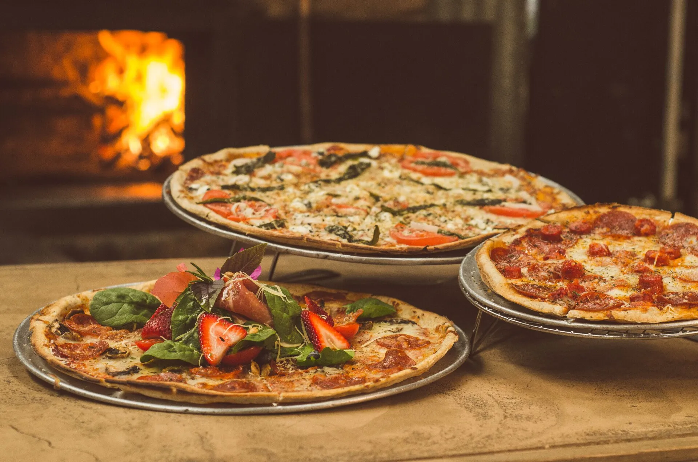

Flower Mound, Texas · Dal 1996
Una tavola.
Una famiglia.
A neighborhood Italian kitchen shaped by family, tradition, and dishes made to order.
PASTA FATTA CON CURA
◆NEW YORK STYLE PIZZA
◆FAMILY OWNED
◆MADE TO ORDER
La nostra storia
Old-world spirit.
Local roots.
Alforno's Italian Kitchen opened in Flower Mound in 1996. Family owned and operated, it has become a neighborhood staple for Italian comfort food, welcoming service, and meals meant to be shared.
The menu stretches from chicken, veal, seafood, and pasta to hand-tossed New York-style pizza, calzones, stromboli, and hot subs.
Visit the kitchen →
MCMXCVI
Tradizione
FAMIGLIA · CUCINA · OSPITALITÀ
Since 1996
“A meal is more than food. It is the table, the story, and the people around it.”
A
Per ogni occasione
Bring everyone
to the table.
Office lunches, family celebrations, and special gatherings become easier with familiar Italian favorites prepared for your group.
Call About Catering01Family gatherings
02Office lunches
03Special occasions
Vieni a trovarci
Your table is waiting.
Hours
Sunday–Thursday11 AM–9 PM
Friday–Saturday11 AM–10 PM